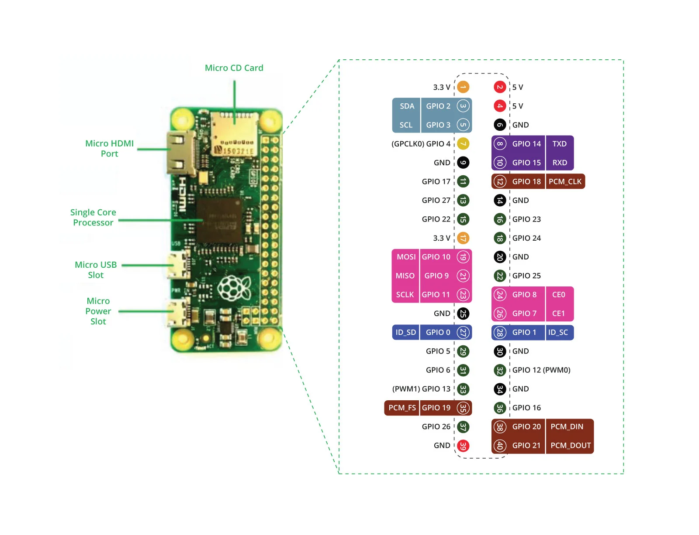

-
sudo raspi-config -
sudo apt update && sudo apt install -y i2c-tools python3-pip && pip3 install RPLCD RPi.GPIO -
ls /dev/i2c*
sudo i2cdetect -y 1
nano lcd_i2c.py
from RPLCD.i2c import CharLCD
import time
# Inisialisasi LCD I2C (Alamat: 0x27, Chip Backlight: PCF8574)
lcd = CharLCD('PCF8574', 0x27)
lcd.clear()
lcd.write_string('Sistem Tertanam\nPraktikum LCD')
time.sleep(3)
lcd.clear()
python3 lcd_i2c.py
nano ultrasonic.py
import RPi.GPIO as GPIO
import time
GPIO.setmode(GPIO.BCM)
TRIG = 23
ECHO = 24
GPIO.setup(TRIG, GPIO.OUT)
GPIO.setup(ECHO, GPIO.IN)
def get_distance():
# Mengirimkan pulsa trigger 10us
GPIO.output(TRIG, True)
time.sleep(0.00001)
GPIO.output(TRIG, False)
start_time = time.time()
stop_time = time.time()
while GPIO.input(ECHO) == 0:
start_time = time.time()
while GPIO.input(ECHO) == 1:
stop_time = time.time()
time_elapsed = stop_time - start_time
# Kecepatan suara 34300 cm/s, dibagi 2 (pergi-pulang)
distance = (time_elapsed * 34300) / 2
return distance
try:
print("Membaca Sensor Ultrasonik HC-SR04 (Ctrl+C untuk keluar)...")
while True:
dist = get_distance()
print(f"Jarak Terukur: {dist:.1f} cm")
time.sleep(0.5)
except KeyboardInterrupt:
GPIO.cleanup()
print("\nPembacaan sensor dihentikan.")
python3 ultrasonic.pyHC-SR04 RADAR
Jarak: 50.0 cm
TRIG: GPIO 23 | ECHO: GPIO 24 | I2C: 0x27